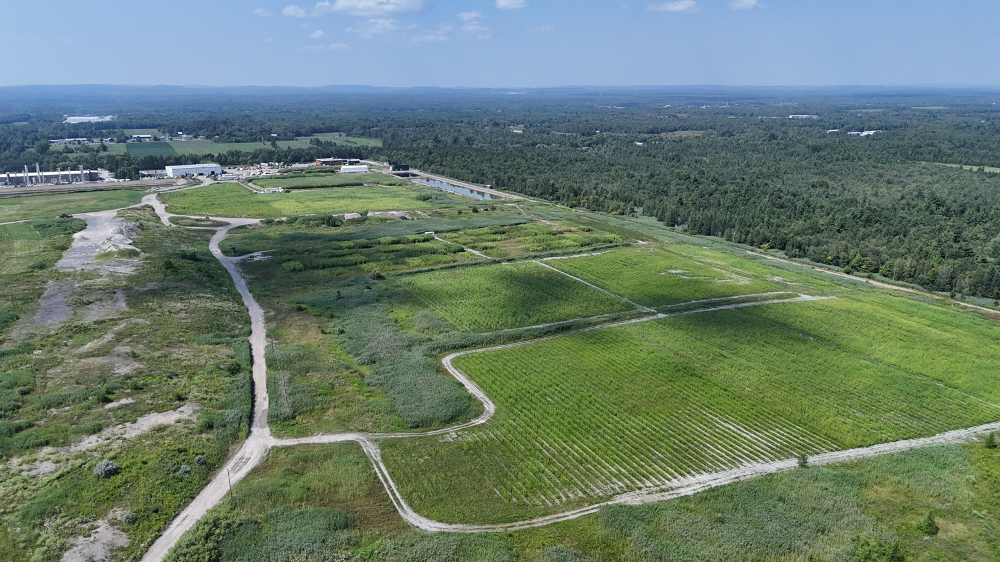
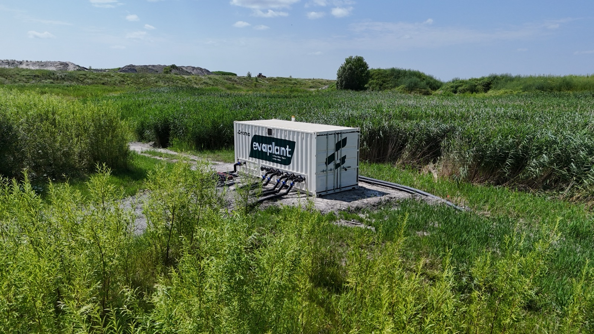
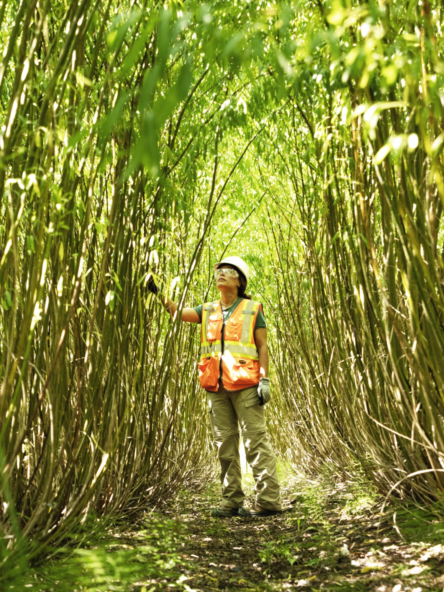

Le contexte
Le LET de Sainte-Sophie génère du lixiviat issu de la percolation des précipitations à travers les matières résiduelles enfouies.
Certaines cellules anciennes génèrent du lixiviat brut qui nécessite une gestion active et une réduction de volume à la source.
La solution mise en place
Ramo a implanté un système Evaplant® sur des cellules fermées du site. L'irrigation contrôlée du lixiviat est distribuée dans la zone racinaire des saules :
- ajustement selon l'humidité du sol et les conditions climatiques
- pilotage des volumes appliqués
Phase initiale (2018) : ~1,1 ha et ~17 600 à 19 200 saules.
Déploiement (2024–2026) : ajout de ~180 000 saules et extension de la plantation à ~12,8 ha au total.
En complément, ~300 m de clôtures en saules tressés ont été installées en périphérie du site pour structurer l'aménagement.

Résultats et performance
Réduction volumique
- jusqu'à ~51 000 m³/an de lixiviat réduit
- aucun rejet liquide pour les volumes traités
Performance carbone
- ~242 tonnes de CO₂ équivalent captées annuellement

Co-bénéfices
Valorisation d'un passif environnemental
Utilisation des cellules fermées comme infrastructure active de gestion.
Réduction des rejets à l'environnement
Diminution directe des volumes de lixiviat dirigés vers le milieu récepteur.
Confinement des contaminants sur site
Réduction des flux hydriques limitant le transfert de contaminants hors du site.
Projet à grande échelle
~204 800 saules sur ~12,8 ha — l'une des plus grandes plantations Evaplant® de Ramo.
Aménagement périphérique
~300 m de clôtures végétales en saules tressés pour la structuration du site.

Lecture technique du projet
Un enjeu similaire ?
Contactez-nous.
Notre équipe est disponible pour discuter de vos besoins et vous proposer la solution adaptée.